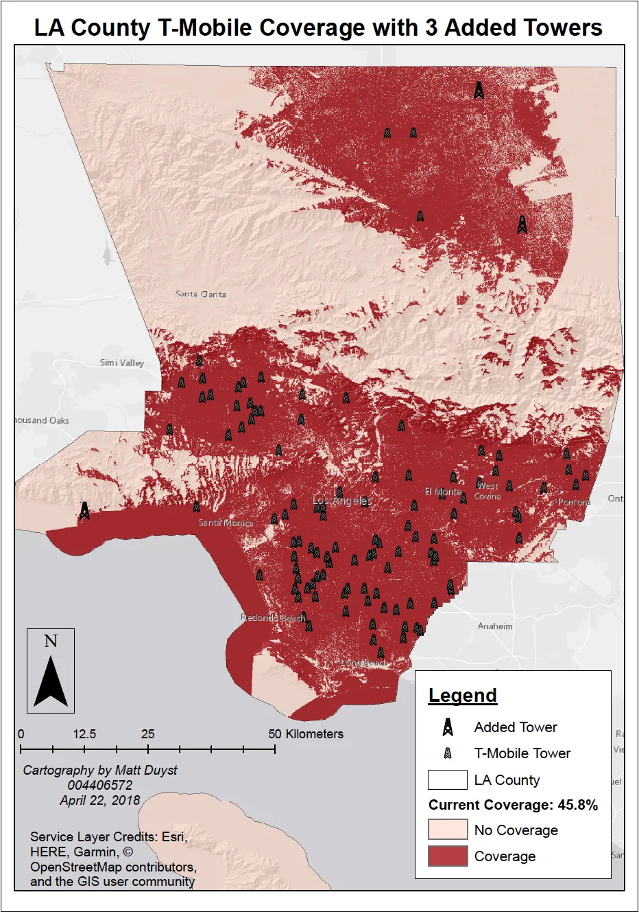
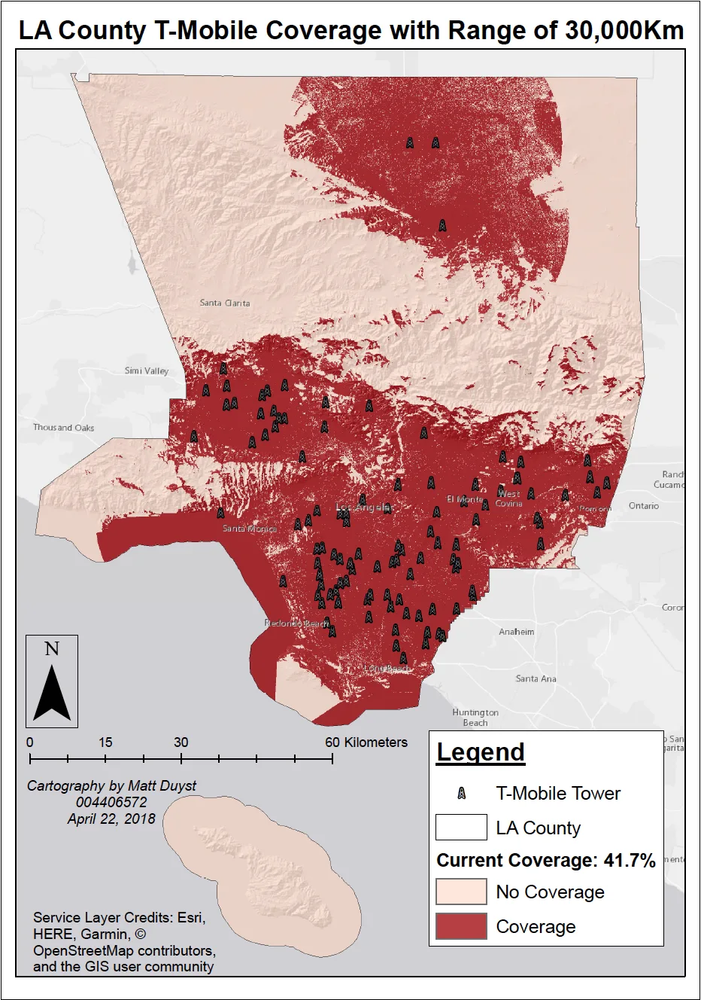
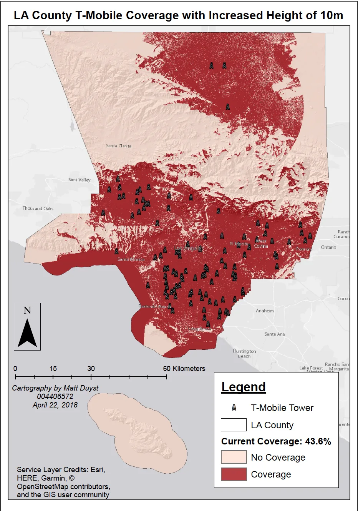

UCLA coursework, 2014 to 2018
Modifications of T-Mobile Cell Towers for Accentuated Coverage Areas: Los Angeles, CA
Abstract:
This study epitomizes the capabilities of advanced methods of raster analysis - a multi-faceted approach of calculating the coverage of T-Mobile cell towers in LA County through the alteration of various scenarios. Likelihood of enhancements in cell coverage were thought through 3 possibilities: adding cell towers, expanding the current range of coverage, or increasing the height of current cell towers. The success of this project fringed upon Viewshed Analysis, which allowed for these hypothetic adjustments to T-Mobile's cell towers to come to fruition.
Improvements could be made by showcasing the increased range in cell coverage in a different color than the current range. Centering the area of study (LA County) to the map extent and minimizing map features (North Arrow, Scale, and Legend), would produce a more visually appealing map from a cartographic point-of-view. Illustrating the addition of towers in the second map could also be more apparent with a different representation that's easier to notice.
Methods:
The outline of LA County was provided from USGS EarthExplorer as an array of GeoTIFF’s (digital elevation models). These were then converted into rasters, through the “Mosaic to New Raster” option in ArcToolbox. The specific locations for each cell tower were obtained through a CSV, downloaded on T-Mobile’s website. This CSV was then converted into a shapefile, with its attribute table being edited to meet each required element — T-Mobile's current coverage (map 1), coverage with the addition of 3 towers (map 2), coverage with an increased range of 5,000Km (map 3), and coverage with increased tower heights of 10m (map 4).
Results:

This map illustrates the current placement of T-Mobile towers in LA County. In total, there are 104 cell towers - the majority of which are concentrated in central and southern Los Angeles. The towers' height, coverage radius, and several factors about the earth’s trajectory were set at given increments. The total amount of area not covered in Los Angeles County is 58.9%, an average calculated by dividing the maximum (7,247,374,591) by the sum (12,301,062,346). To find the average area covered by current T-Mobile towers, this number was subtracted by 100. 41.1% of LA County is covered by T-Mobile.

The above map offers an insight to what 3 additional cell towers would achieve for improving T-Mobile’s cell service in LA County. The placement of added towers was chosen in areas lacking in coverage: Malibu, Palmdale, and Lancaster. The same parameters for calculating coverage of this scenario were held constant with the prior map. The addition of 3 towers had the most significant result on increasing T-Mobile total coverage (a total of 45.8%).

This map represents the impact of an increased radius of 5,000km — from 25,000km to 30,000km. While one would assume increasing the radius by a number as staggering as 5,000km would alter coverage significantly, a mere of 0.6% difference was achieved. The same methodology for total coverage area was applied: dividing the maximum (this time 7,172,600,041) by the sum (12,301,062,346) and subtracting by 100. 58.3% was the result, and when subtracted by 100 left for a total coverage of 41.7% in LA County.

This final map considers the difference an alteration of 10 meters in cell tower height might have on T-Mobile coverage in LA County. Interestingly, altering the tower height (as opposed to increasing the range) had a much more significant impact on cell coverage area. By increasing the towers’ height by 10 meters, the coverage area increased by almost 2% (a total of 43.6%). The same viewshed analysis factors were held constant: dividing the max (this time 6,935,051,785) by the sum (12,301,062,346), to get the total area not covered (56.4%). This number was then subtracted by 100 to get the total area covered.